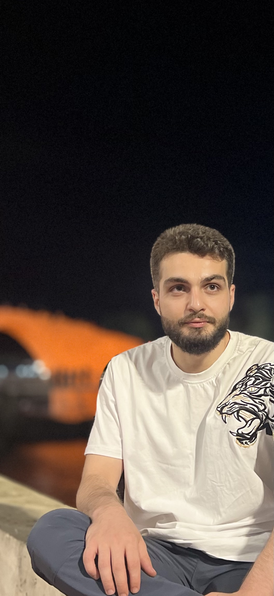

Over Mij
Hallo! Ik ben Darvan Suleiman, een gepassioneerde softwareontwikkelaar met een focus op webontwikkeling. Mijn interesse in IT begon toen ik zag hoe een vriend van mij een website maakte, wat mijn nieuwsgierigheid naar coderen en het bouwen van websites aanwakkerde. Sindsdien ben ik gepassioneerd geraakt over het werken met technologieën zoals HTML, CSS, JavaScript en PHP. Momenteel studeer ik Softwareontwikkeling aan het mbo 4 niveau aan de Delft Brasserskade. Door mijn academische opleiding en zelfstudie heb ik een stevige basis opgebouwd in webontwikkeling. Ik ben altijd op zoek naar nieuwe uitdagingen en mogelijkheden om mijn vaardigheden verder te ontwikkelen en mijn kennis uit te breiden.